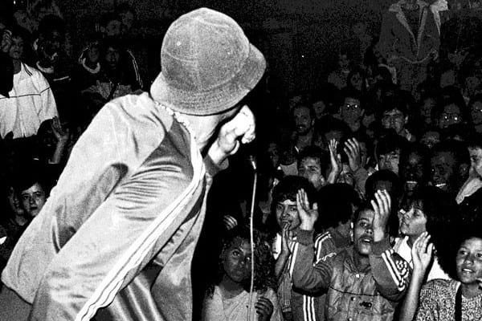

O rap é composto por rimas poéticas intensas, que muitas vezes vem com críticas sobre o contexto político, social e cultural. A letra apresenta-se como forma de discurso, com uma batido rápida e pouca melodia. Dez anos depois da sua origem nos EUA, esse estilo chegou no Brasil, em 1980 através de grupos da periferia que se reuniam no metrô de São Paulo. Rap era associado a criminalidade em nosso país, mas ao passar dos anos essa visão mudou e foi assimilado como um estilo musical que conecta os sentimentos através da música.

Caurin
Muito bem feito 👌, site com bastante informações e uma linguagem bem formal.
5/5